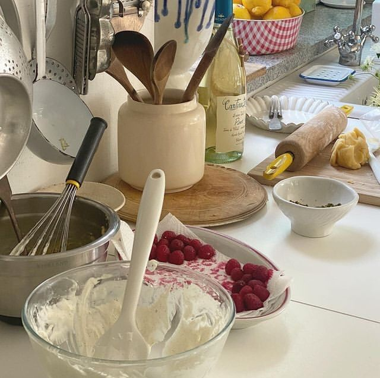
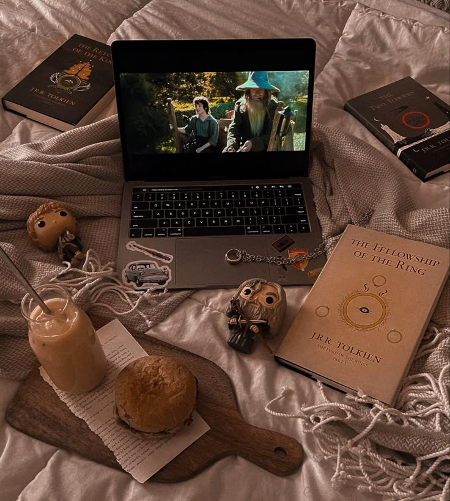
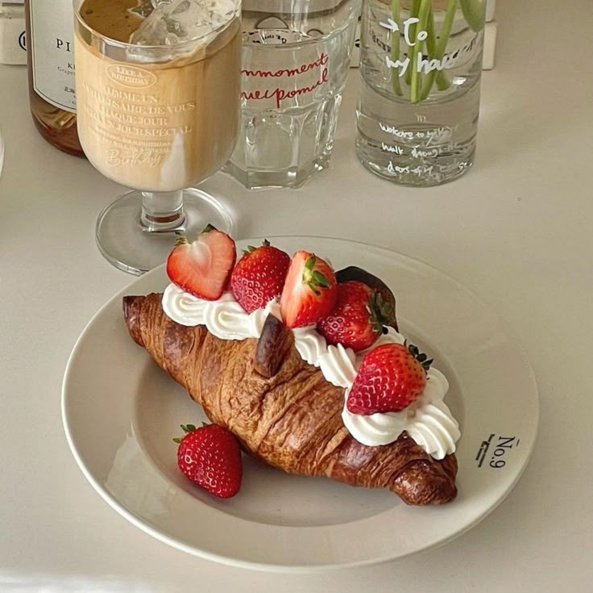

Interests & Favorites
🧁Hobby: Baking

Baking is more than just a hobby for me—it's a creative outlet where I can experiment with flavors, textures, and presentation. I find joy in the precision of measuring ingredients and the science behind creating the perfect bake.
Favorite Things to Bake:
- Cupcakes
- Cookies
- Macarons
- Brownies
🎬Hobby: Watching Movies

I love immersing myself in different worlds through film. Movies provide me with inspiration, relaxation, and a way to experience stories from various perspectives. I enjoy a wide range of genres and appreciate both mainstream and independent films.
Favorite Genres:
- Romance
- Drama
- Comedy
- Fiction
🍴 Favorite Food: Pastries

Croissants
Buttery & Flaky

Fruit Tarts
Fresh & Sweet

Cake Slices
Decadent & Rich